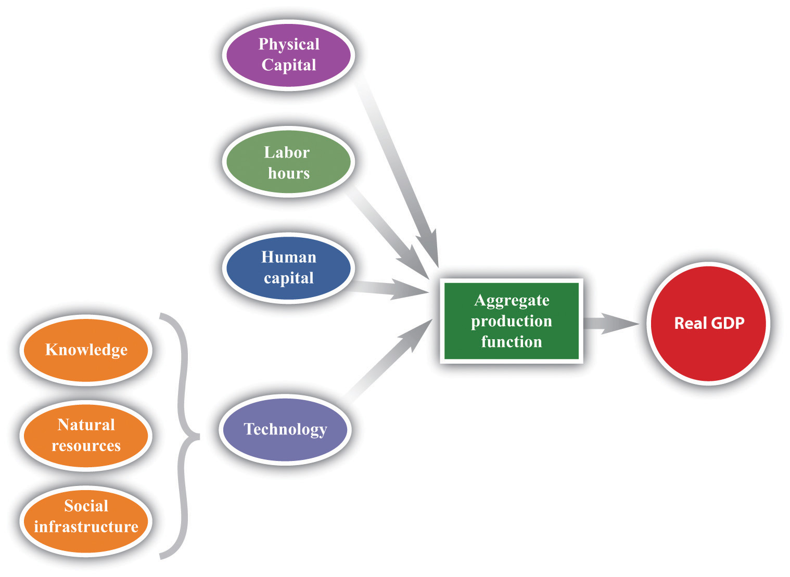
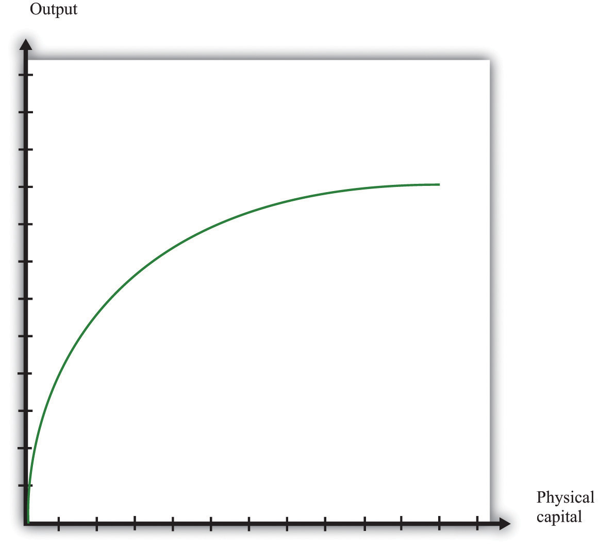
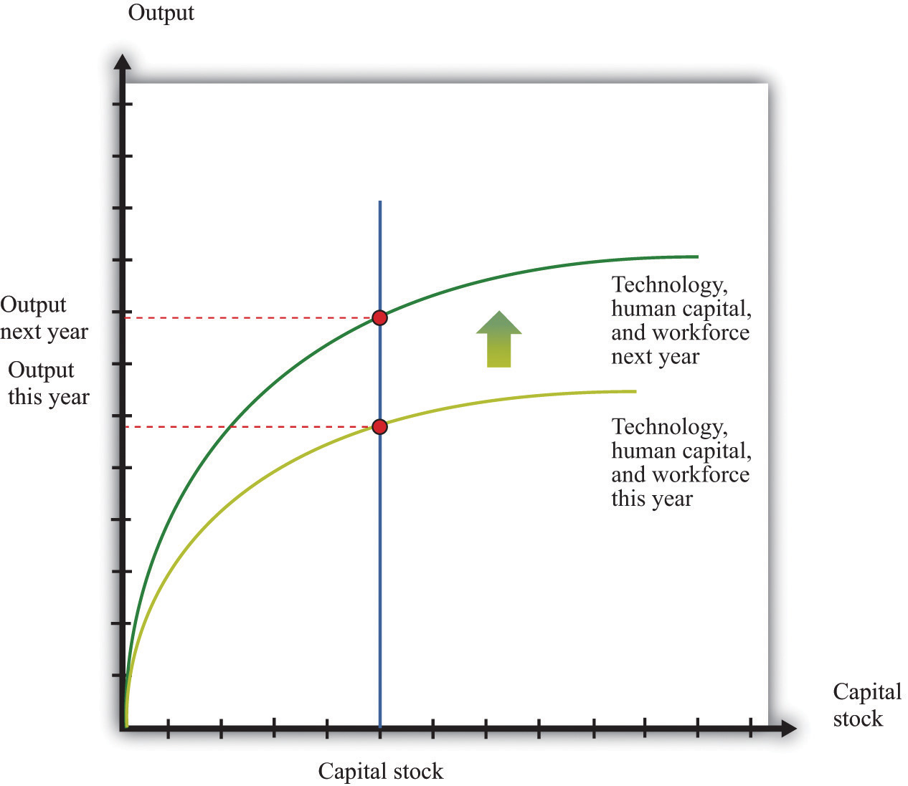
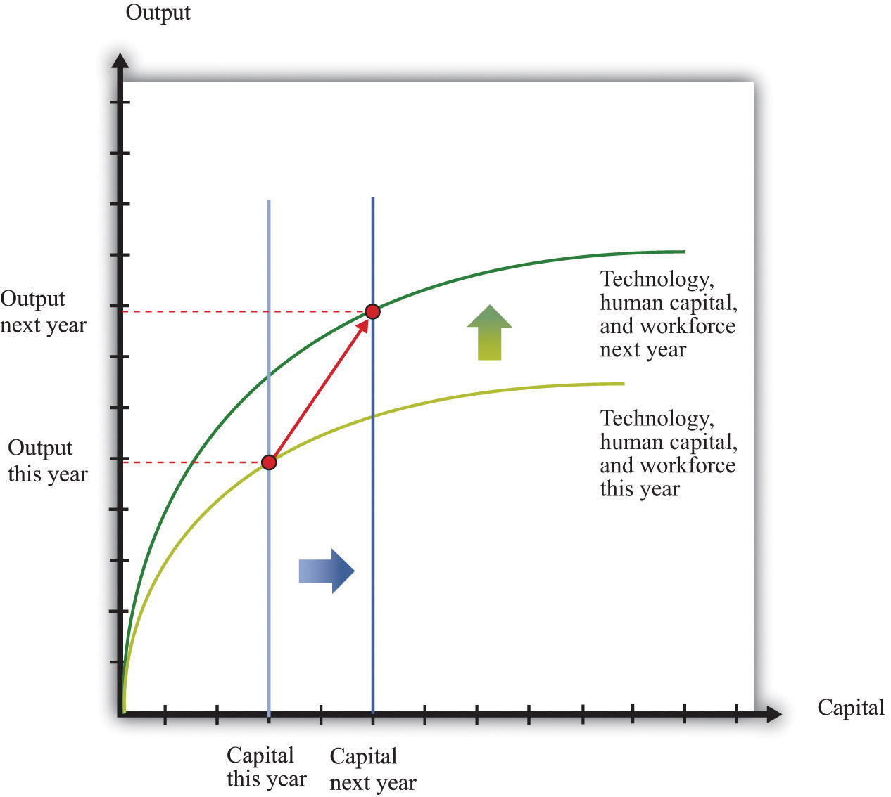
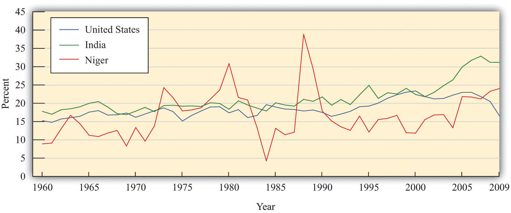

After you have read this section, you should be able to answer the following questions:
The macroeconomy is very complicated. Overall economic performance depends on billions of decisions made daily by millions of people. Economists have developed techniques to keep us from being overwhelmed by the sheer scale of the economy and the masses of data that are available to us. One of our favorite devices is to imagine what an economy would look like if it contained only one person. This fiction has two nice features: we do not have to worry about differences among individuals, and we can easily isolate the most important economic decisions. Thinking about the economy as if it were a single person is only a starting point, but it is an extremely useful trick for cutting through all the complexities of, say, a $12 trillion economy populated by 300 million individuals.
Figure 21.2 The Aggregate Production Function
The aggregate production function combines an economy’s physical capital stock, labor hours, human capital, and technology to produce output (real gross domestic product [real GDP]).
Imagine, then, an economy called Solovenia. Solovenia is populated by one individual—we will call him Juan. Juan has access to an aggregate production function. The amount of output (real GDP) that he can produce depends on how large a physical capital stock he owns, how many hours he chooses to work, his human capital, and his technology (Figure 21.2 "The Aggregate Production Function"). Physical capital is the stock of factories and machinery in the economy, while human capital refers to the skills and education of the workforce. Technology is a catchall term for everything else (other than capital, labor, or human capital) that affects output.Physical capital, human capital, and technology are discussed in more detail in Chapter 20 "Globalization and Competitiveness". It includes the following:
Toolkit: Section 31.26 "The Aggregate Production Function"
You can review the aggregate production function, including its inputs, in the toolkit.
Much of our focus in this chapter is on how economies build up their stock of physical capital. Figure 21.3 "The Aggregate Production Function: Output as a Function of the Physical Capital Stock" shows how output in the aggregate production function depends on the capital stock. Increases in the capital stock lead to more output. If Juan has more tools to work with, then he can produce more goods. However, we usually think that the production function will exhibit diminishing marginal product of capital, which means that a given increase in the capital stock contributes more to output when the capital stock is low than when the capital stock is high. In Figure 21.3 "The Aggregate Production Function: Output as a Function of the Physical Capital Stock", we can see this from the fact that the production function gets flatter as the amount of physical capital increases.
Figure 21.3 The Aggregate Production Function: Output as a Function of the Physical Capital Stock
As the amount of physical capital increases, output increases, but at a decreasing rate because of the diminishing marginal product of capital.
Each day Juan chooses how much time to work and how much time to spend in leisure. Other things being equal, we expect that Juan likes to have leisure time. This is not to say that Juan never gets any satisfaction from working. But like most people—even those who enjoy their jobs—he would prefer to work a little bit less and play a little bit more. He cannot spend all his time in leisure, however. He works because he likes to consume. The harder he works, the more real GDP he can produce and consume. Juan’s decision about how many hours to work each day is determined in large part by how productive he can be—that is, how much real GDP he can produce for each hour of leisure time that he gives up.
Juan does not have to consume all the output that he produces; he might save some of it for the future. As well as deciding how much to work, he decides how much to consume and how much to save each day. You have probably made decisions like Juan’s. At some time in your life, you may have worked at a job—perhaps in a fast-food restaurant, a grocery store, or a coffee shop. Perhaps you were paid weekly. Then each week you might have spent all the money you earned on movies, meals out, or clothes. Or—like Juan—you might have decided to spend only some of that money and save some for the future. When you save money instead of spending it, you are choosing to consume goods and services at some future date instead of right now. You may choose to forgo movies and clothes today to save for the purchase of a car or a vacation.
The choice we have just described—consuming versus saving—is one of the most fundamental decisions in macroeconomics. It comes up again and again when we study the macroeconomy. Just as you and Juan make this choice, so does the overall economy. Of course, the economy doesn’t literally make its own decision about how much to save. Instead, the saving decisions of each individual household in the economy determine the overall amount of savings in the economy. And the economy as a whole doesn’t save the way you do—by putting money in a bank. An economy saves by devoting some of its production to capital goods rather than consumer goods. If Juan chooses to produce capital goods, he will have a larger capital stock in the future, which will allow him to be more productive and enjoy higher consumption in the future.
At any given moment, Juan’s ability to produce output is largely determined by his stock of physical capital, his human capital, and the state of technology in Solovenia. But, as time passes, the level of output in Solovenia can change through a variety of mechanisms.
First, the capital stock in Solovenia can grow over time, as shown in Figure 21.4. Juan builds up his capital stock by saving. Since Juan is the only inhabitant, the amount he saves is equal to the national savingsThe sum of private and government saving. of Solovenia. It is the difference between his output (real GDP of Solovenia) and the amount he consumes.In a real economy, national savings also include the savings of government: we must add in the government surplus or subtract the government deficit, as appropriate.
Figure 21.4

Increases in the capital stock lead to increases in output. If the capital stock in Solovenia increases between this year and next year, output also increases. Increases in the capital stock are one source of growth.
The more that Juan saves today, the more he can build up his capital stock, and the higher his future standard of living will be. If Juan chooses to consume less today, he will have a higher living standard in the future. If Juan chooses to consume more today, he must accept that this means less consumption in the future. Economies, like individuals, can choose between eating their cake now or saving it for the future.
In making this decision, Juan weighs the cost of giving up a little bit of consumption today against the benefit of having a little bit more consumption in the future. The higher the marginal product of capital, the more future benefit he gets from sacrificing consumption today. Other things being equal, a higher marginal product of capital induces Juan to save more. Juan’s choice also depends on how patient or impatient he is. The more patient he is, the more he is willing to give up consumption today to enjoy more consumption in the future.
Increases in the amount of physical capital are one way in which an economy can grow. Another is through increases in human capital and technology. These shift the production function upward, as shown in Figure 21.5. Perhaps Juan sometimes has better ideas about how to do things. Perhaps he gets better with practice. Perhaps Juan spends some time trying to come up with better ways of producing things.
Figure 21.5
Increases in human capital or technology lead to increases in output. Increases in technology, human capital, and the workforce, like increases in the capital stock, are a source of output growth.
Through the accumulation of physical and human capital, and by improving the components of technology such as knowledge and social infrastructure, the output in Solovenia will grow over time. The combined effect of physical capital growth and improvements in technology is shown in Figure 21.6.
Figure 21.6
Increases in capital, human capital, and technology all lead to increases in output. In general, economies grow because of increases in capital, technology, human capital, and the workforce.
If Juan does not trade with the rest of the world, his only way to save for the future is by building up his capital stock. In this case, national savings equal investmentThe purchase of new goods that increase capital stock, allowing an economy to produce more output in the future.. An economy that does not trade with other countries is called a closed economyAn economy that does not trade with the rest of the world.. An economy that trades with other countries is called an open economyAn economy that trades with other countries.. In the modern world, no economy is completely closed, although some economies (such as Belgium) are much more open than others (such as North Korea). The world as a whole is a closed economy, of course.
If Solovenia is an open economy, Juan has other options. He might decide that he can get a better return on his savings by investing in foreign assets (such as Italian real estate, shares of Australian firms, or Korean government bonds). Domestic investment would then be less than national savings. Juan is lending to the rest of the world.
Alternatively, Juan might think that the benefits of investment in his home economy are sufficiently high that he borrows from the rest of the world to finance investment above and beyond the amount of his savings. Domestic investment is then greater than national savings. Of course, if Juan lends to the rest of the world, then he will have extra resources in the future when those loans are repaid. If he borrows from the rest of the world, he will need to pay off that loan at some point in the future.
There may be very good opportunities in an economy that justify a lot of investment. In this case, it is worthwhile for an economy to borrow from other countries to supplement its own savings and build up the capital stock faster. Even though the economy will have to pay off those loans in the future, the benefits from the higher capital stock are worth it.
The circular flow of income shows us how these flows show up in the national accounts. If we are borrowing on net from other countries, there is another source of funds in additional to national savings that can be used for domestic investment. If we are lending on net to other countries, domestic investment is reduced.
Toolkit: Section 31.27 "The Circular Flow of Income"
You can review the circular flow of income in the toolkit.
Savings and investment in a country are linked, but they are not the same thing. The savings rate tells us how much an economy is setting aside for the future. But when studying the accumulation of capital in an economy, we look at the investment rateThe total investment as a fraction of GDP. rather than the savings rate. Total investment as a fraction of GDP is called the investment rate:
Figure 21.7 Investment Rates in the United States, India, and Niger
There are marked differences in investment rates in the United States, India, and Niger.
Source: Alan Heston, Robert Summers and Bettina Aten, Penn World Table Version 7.0, Center for International Comparisons of Production, Income and Prices at the University of Pennsylvania, May 2011.
Figure 21.7 "Investment Rates in the United States, India, and Niger" shows investment rates in the United States, India, and Niger from 1960 to 2009. A number of features of this picture are striking:International Monetary Fund, World Economic Outlook Database, April 2011, accessed July 29, 2011, http://www.imf.org/external/pubs/ft/weo/2011/01/weodata/index.aspx.
Low investment rates may be due to low savings rates. They may also reflect relatively low returns to increases in the capital stock in a country. The low investment rate that prevailed for many years in Niger not only reflected a low saving rate but also indicates that something is limiting investment from external sources. For the United States, in contrast, a significant part of the high investment rate is due not to domestic savings but to inflows from other countries.
We know that output per person is a useful indicator of living standards. Increases in output per person generally translate into increases in material standards of living. But to the extent that an economy trades with other countries, the two are not equivalent. If an economy borrows to finance its investment, output per person will exaggerate living standards in the country because it does not take into account outstanding obligations to other countries. If an economy places some of its savings elsewhere, then measures of output per person will understate living standards.The national accounts deal with this issue by distinguishing between GDP, which measures the production that takes place within a country’s borders, and gross national product (GNP), which corrects for income received from or paid to other countries.
Now add another country, Solovakia (with a single inhabitant named Una), and compare it to Solovenia. We can compare Solovenia and Solovakia by investigating which is producing more output per person and why. Imagine, for example, that Solovenia is a relatively poor country, and Solovakia is richer. Using our knowledge of the aggregate production function, we can understand how this difference might arise. It might be because Una has more human capital or knowledge than Juan, or because Una has a larger stock of physical capital.
Another basis for comparison is the rate at which the two economies are growing. If Solovakia is richer, and if it is also growing faster than Solovenia, then the gap between the two countries will become wider over time. We call such a process divergenceA growth process where poor countries grow slower than rich countries.. Conversely, if Solovenia is growing faster than Solovakia, then the gap between Juan’s and Una’s living standards will become smaller over time. Such a situation, where poorer countries catch up to richer ones, is called convergenceA growth process where poor countries grow faster than rich countries..
Why might we see either convergence or divergence? Part of the answer has to do with the marginal product of capitalThe extra output obtained from one more unit of capital. in the two countries. Suppose that Solovakia is richer because it has a larger stock of physical capital than Solovenia. In that case, we expect the marginal product of capital to be larger in Solovenia. Solovenia is a more competitive economy than Solovakia. Juan will want to invest at home, while Una will take some of the output that she produces in Solovakia and invest it in Solovenia. Therefore we expect capital to migrate from Solovakia to Solovenia. As a consequence, it is likely that Solovenia will grow faster than Solovakia, leading to convergence.